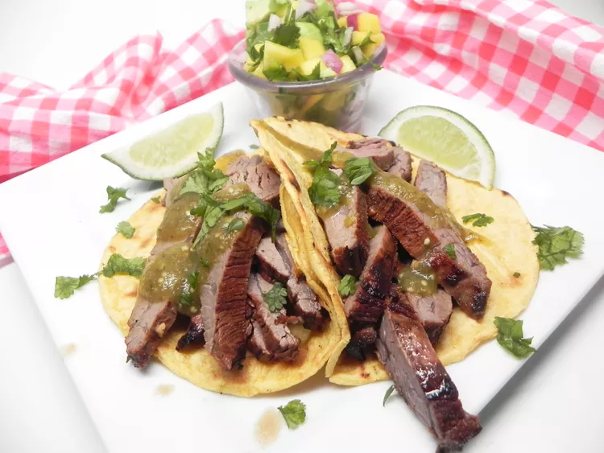

Steak Taco

Description
After making steak tacos a ton of different ways from a ton of different recipes, I think I found my favorite. Very flavorful meat and great salsa. No one flavor seems to kill the rest. Serve with lime wedges, your choice of tortillas, and sour cream.
Ingredients
- ⅓ cup soy sauce
- ¼ cup olive oil
- 1 small lime, juiced
- 3 tablespoons white vinegar
- 2 cloves garlic, minced
- ½ teaspoon ground black pepper
- ½ teaspoon ground white pepper
- ½ teaspoon garlic powder
- ½ teaspoon dried oregano
- ½ teaspoon cayenne pepper
- ½ teaspoon ground cumin
- ½ teaspoon smoked paprika
- 1 ½ pounds beef flank steak, trimmed of excess fat
- 1 medium ripe mango, diced
- 1 avocado, chopped
- 1 medium lime, juiced
- 1 fresh jalapeno pepper, seeded and diced
- ¼ cup chopped red onion
- ¼ cup chopped fresh cilantro
- 1 (12 ounce) package tortillas
Steps
- Combine soy sauce, olive oil, lime juice, vinegar, garlic, salt, black pepper, white pepper, garlic powder, oregano, cayenne pepper, cumin, and paprika in a container. Place flank steak in the marinade and refrigerate for 8 to 24 hours.
- Mix mango, avocado, lime juice, jalapeno, red onion, and cilantro together to make the salsa.
- Set an oven rack at least 6 inches from the heat source and preheat the oven's broiler.
- Remove flank steak from marinade and pat dry with paper towels.
- Broil flank steak on high, flipping at the halfway mark, until steaks are beginning to firm and are hot and slightly pink in the center, about 18 minutes. An instant-read thermometer inserted into the center should read at least 130 degrees F (54 degrees C).
- Cut flank steak into small cubes. Wrap 8 tortillas in a paper towel and heat in the microwave until soft, 20 to 30 seconds. Serve steak on tortillas.